Museot
Luonnontieteellinen museo
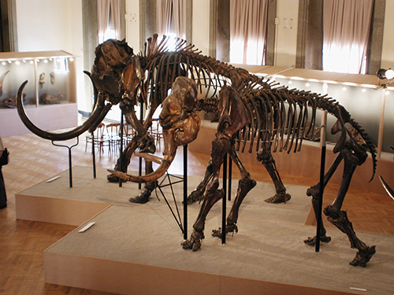"Helsingin Luonnontieteellisessä museossa sukelletaan Itämeren pinnan alle, narskutellaan pakkaslunta, kauhistellaan kodin kutsumattomia vieraita, pohditaan evoluution aikaansaannoksia, ihmetellään luustokokoelmaa ja ihmetellään maailman luonnon monimuotoisuutta."
Katso täältä lisää!Kansallismuseo
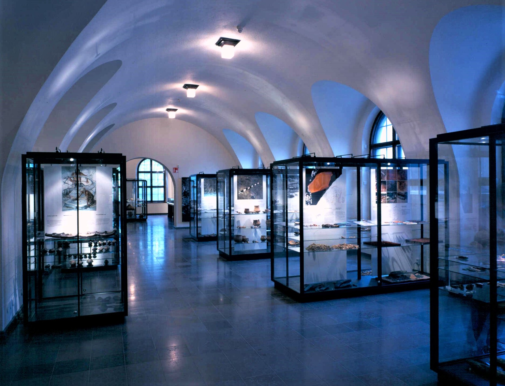"Suomen Kansallismuseo on kulttuurin ja historian keidas keskellä Helsinkiä."
Katso täältä lisää!Suomenlinnan lelumuseo
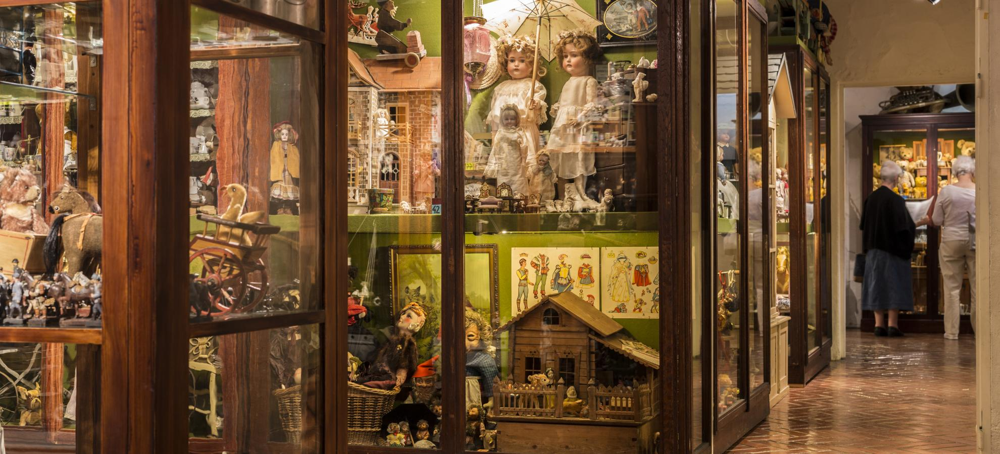"Me tutustutamme sinut yksityiseen kokoelmaan vanhoja leikkikaluja, aina 1830-luvulta Neuvostoliiton romahdukseen saakka. Kokoelmamme käsittää antiikki- ja vintageleluja, kuten nukkeja, peltileluja, nalleja, nukkekoteja ja muita lelumaailman eläkeläisiä."
Katso täältä lisää!Ateneum
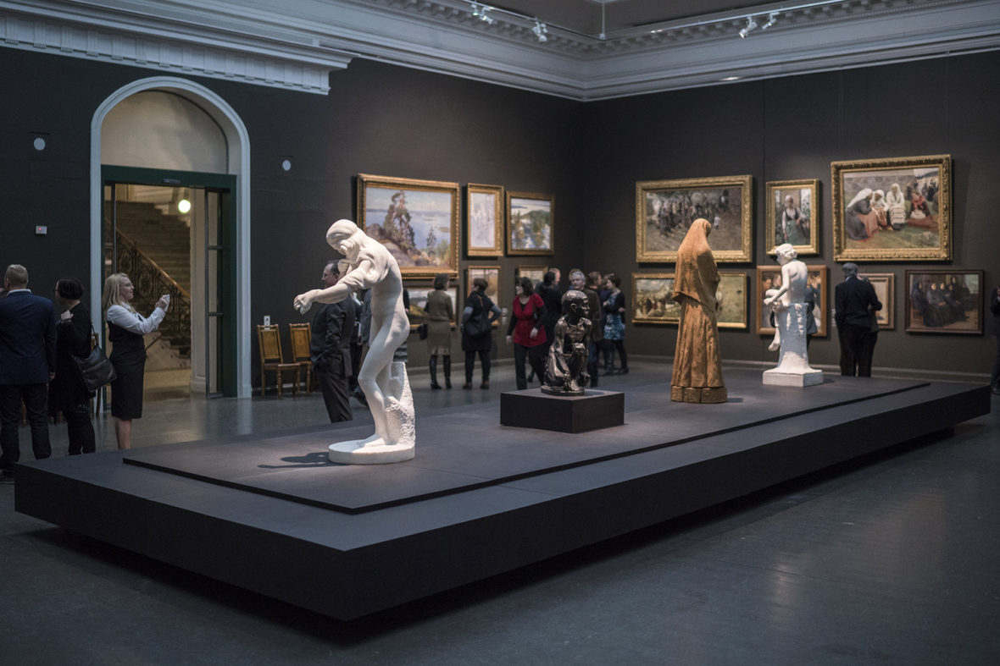"Ateneum on maan tunnetuin taidemuseo ja Suomen taiteen koti. Kuvamme ovat iskostuneet suomalaisten yhteiseen muistiin: rakastetut kokoelmamme kattavat aikakauden 1800-luvulta moderniin."
Katso täältä lisää!Amos Rex
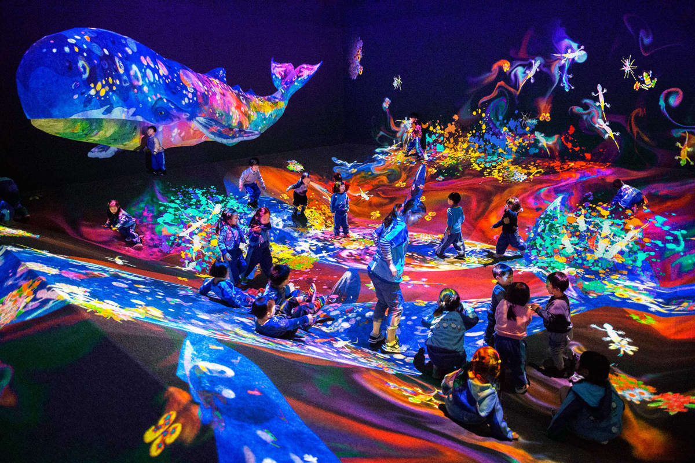"Yhteys menneen ja nykyisen välillä loi kiehtovan lähtökohdan uuden museon muotoilulle. Alueen vanhin kerrostuma on 1800-luvun Turun kasarmin talousrakennus aukion länsisivulla. Viime vuosisataa edustavaan Lasipalatsiin sijoittuvat uuden taidemuseon sisäänkäynnit auloineen, hallinnon työtilat sekä elokuvateatteri Bio Rex."
Katso täältä lisää!Kiasma
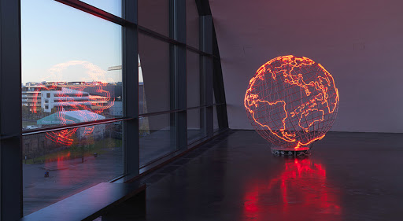"Kiasma on nykytaiteen museo keskellä Helsinkiä ja osa Kansallisgalleriaa. Kiasma tekee tunnetuksi ja kerää oman aikamme taidetta – sitä, mitä taiteilijat tekevät juuri nyt."
Katso täältä lisää!HAM
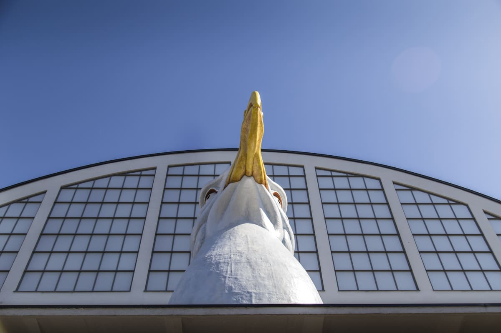"Helsingin taidemuseo HAM pitää huolta helsinkiläisten omasta taidekokoelmasta, johon kuuluu yli 9000 teosta. Lähes puolet kokoelmasta on kaupunkilaisten ilona puistoissa, kaduilla, virastoissa, terveysasemilla, kouluissa ja kirjastoissa."
Katso täältä lisää!Gallen Kallelan museo
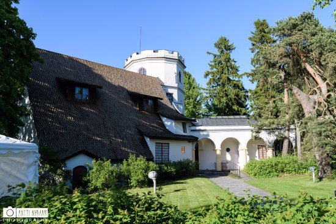"Taiteilija Akseli Gallen-Kallelan (1865–1931) suunnittelema ja rakentama Tarvaspään ateljeelinna avattiin yleisölle vuonna 1961 Gallen-Kallelan Museona."
Katso täältä lisää!Alvar Aallon ateljee
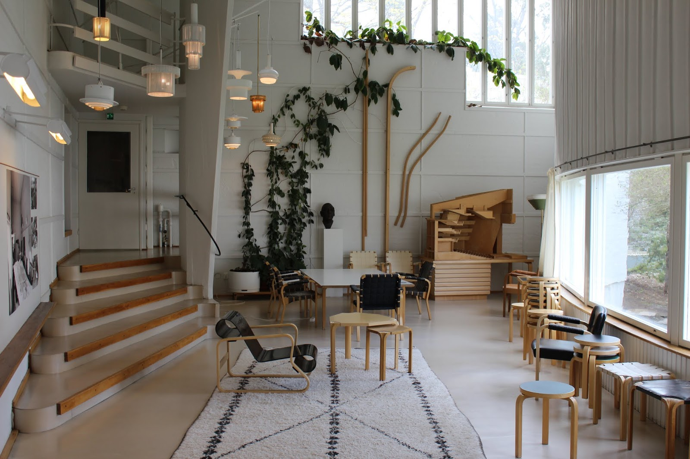"Helsingin Munkkiniemessä sijaitseva, arkkitehtiperheelle suunniteltu kaunis Alvar Aallon kotitalo sekä valoisana arkkitehtitoimistona palvellut Alvar Aallon ateljee ovat yleisölle avoimia opastetuilla kierroksilla ympäri vuoden."
Katso täältä lisää!Mannerheim museo
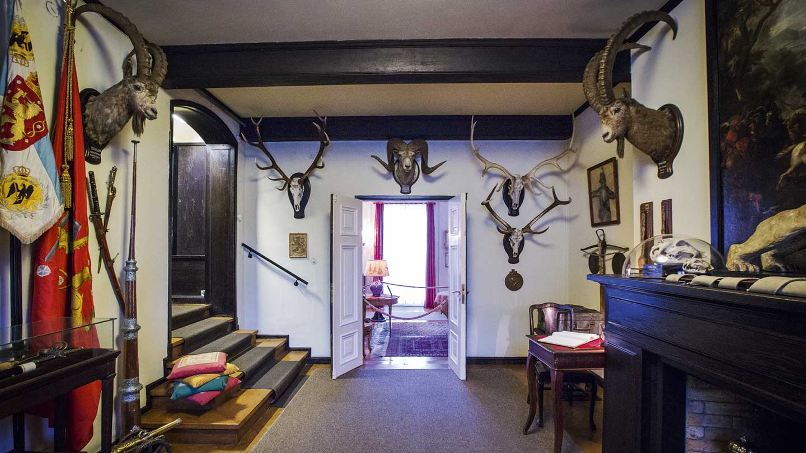"Suomen marsalkka, vapaaherra Gustaf Mannerheim (1867—1951) asui Kaivopuistossa sijaitsevassa huvilassa vuosina 1924—51. Huvila on vuodesta 1951 toiminut hänen elämäänsä ja Suomen historiaa esittelevänä museona. Koti on säilytetty alkuperäisessä asussaan lukuun ottamatta muutamaa huonetta jotka on muutettu näyttelytiloiksi."
Katso täältä lisää!Villa Gyllenberg

"Koti- ja taidemuseo Villa Gyllenberg sijaitsee kauniissa luonnonympäristössä Helsingin Kuusisaaressa. Tunnelmallisessa vanhassa huvilassa kävijälle avautuu taiteenkeräilijän koti, joka rakennettiin 1900-luvun puolivälissä."
Katso täältä lisää!Helsingin yliopiston observatorio
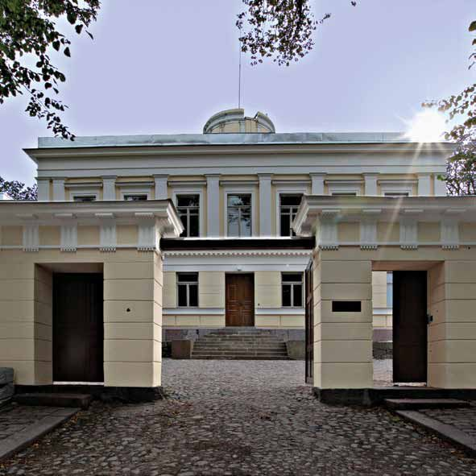"Arkkitehti C. L. Engelin yhteistyössä professori F. W. A. Argelanderin kanssa suunnittelema, Tähtitorninvuorelle 1834 valmistunut Observatorio toimii nykyisin Helsingin yliopistomuseoon kuuluvana tähtitieteen yleisökeskuksena."
Katso täältä lisää!